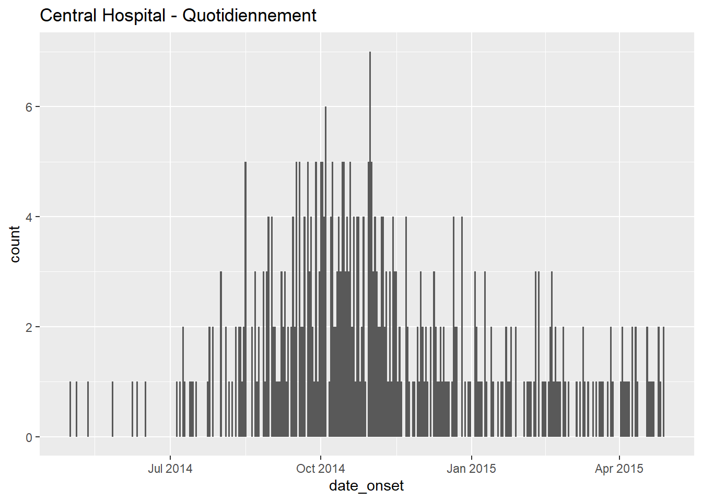
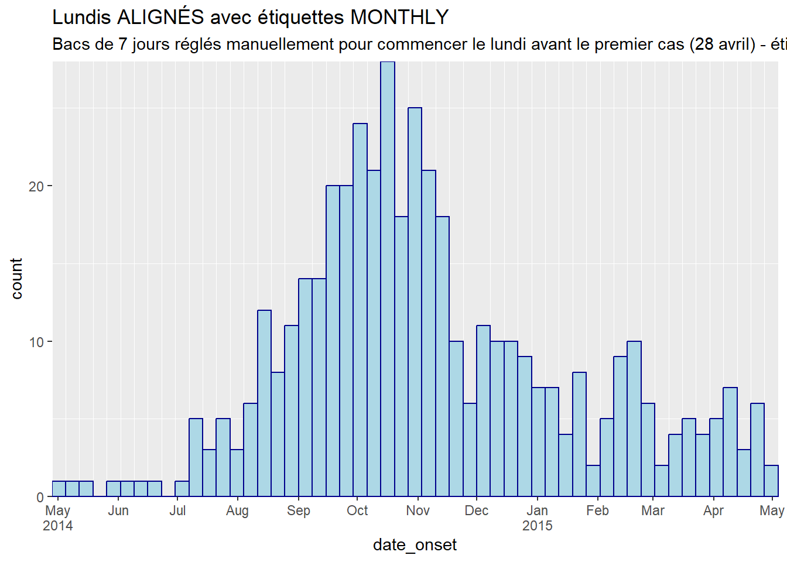
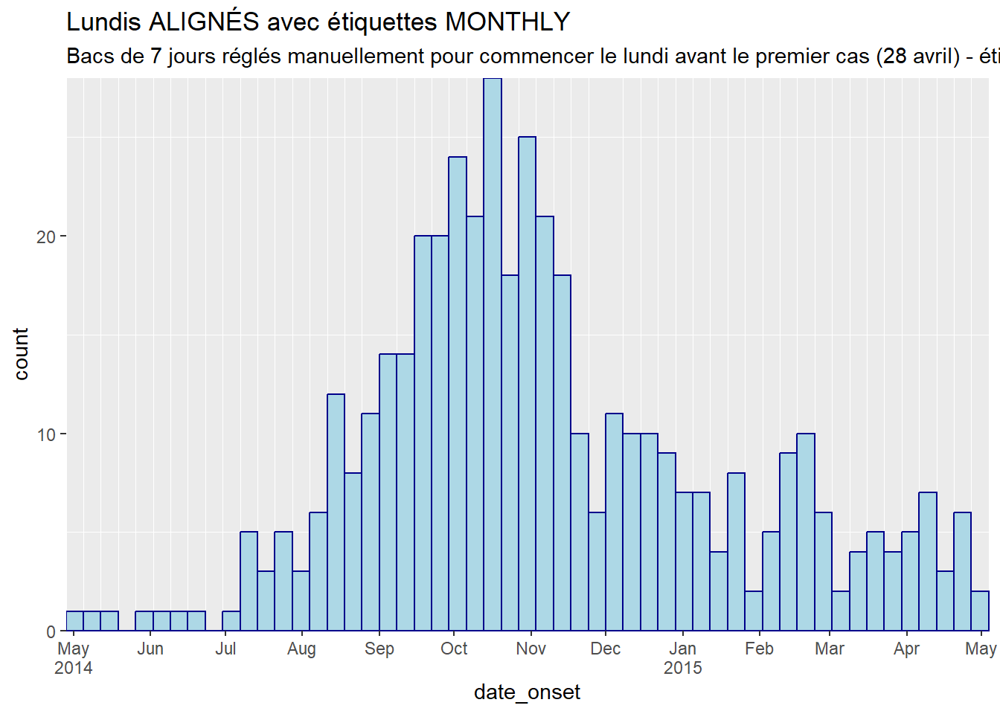

32 Courbes épidémiques

Une courbe épidémique (également connue sous le nom de “courbe épi”) est un graphique épidémiologique de base généralement utilisé pour visualiser le schéma temporel d’apparition de la maladie parmi un groupe de cas ou une épidémie.
L’analyse de la courbe épi peut révéler des tendances temporelles, des valeurs aberrantes, l’ampleur de l’épidémie, la période d’exposition la plus probable, les intervalles de temps entre les générations de cas, et peut même aider à identifier le mode de transmission d’une maladie non identifie (par exemple, source ponctuelle, source commune continue, propagation de personne à personne). Une leçon en ligne sur l’interprétation des courbes épi est disponible sur le site Web du US CDC.
Dans cette page, nous démontrons le paquet ggplot2 pour produire des épicurves dans R, qui permet une personnalisation avancé via des commandes plus complexes.
Nous abordons également des cas d’utilisation spécifiques tels que :
- Les tracés de données de comptages agrégées
- Le facettage ou la production de petits multiples
- Application de moyennes mobiles
- Montrer quelles données sont “provisoires” ou sujettes à des retards de rapport
- Superposer l’incidence cumulative des cas à l’aide d’un deuxiéme axe
32.1 Préparation
Paquets
Ce chunk de code montre le chargement des paquets nécessaires aux analyses. Dans ce manuel, nous mettons l’accent sur p_load() de pacman, qui installe le paquet si nécessaire et le charge pour l’utiliser. Vous pouvez également charger les paquets installs avec library() de base R. Voir la page sur R basics pour plus d’informations sur les paquets R.
pacman::p_load(
rio, # import/export de fichiers
here, # chemins de fichiers relatifs
lubridate, # travailler avec des dates/epiweeks
aweek, # paquet alternatif pour travailler avec les dates/semaines
#incidence2, # paquet alternatif
#i2extras, # supplément à incidence2
scales, # fonctions utiles pour les échelles d'axes
stringr, # recherche et manipulation de chaînes de caractères
forcats, # travail avec des facteurs
RColorBrewer,# palettes de couleurs de colorbrewer2.org
tidyverse # gestion des données + graphiques ggplot2
) Importer des données
Deux exemples de jeux de données sont utilisés dans cette section :
- Liste de cas individuels d’une épidémie simulée.
- Comptage agrégé par hôpital à partir de la même épidémie simulée.
Les jeux de données sont importés à l’aide de la fonction import() du paquetage rio. Voir la page Importation et exportation pour les différentes maniéres d’importer des données.
Liste de cas
Nous importons le jeu de données des cas d’une épidémie d’Ebola simulée. Si vous souhaitez télécharger les données pour les suivre pas à pas, consultez les instructions de la page Télécharger le manuel et les données. Nous supposons que le fichier est dans le répertoire de travail, donc aucun sous-dossier n’est spécifié dans ce chemin de fichier.
linelist <- import("linelist_cleaned.xlsx")Les 50 premiéres lignes sont affichées ci-dessous.
Comptes de cas agrégés par hôpital
Pour les besoins du manuel, le jeu de données des comptages hebdomadaires agrégés par hôpital est créé à partir de la linelist avec le code suivant.
# Importez les données de comptage dans R
count_data <- linelist %>%
group_by(hospital, date_hospitalisation) %>%
summarize(n_cases = dplyr::n()) %>%
filter(date_hospitalisation > as.Date("2013-06-01")) %>%
ungroup()Les 50 premiéres lignes sont affichées ci-dessous :
Définir les paramétres
Pour la production d’un rapport, vous pouvez souhaiter définir des paramétres modifiables tels que la date à laquelle les données sont actuelles (la “date des données”). Vous pouvez ensuite faire référence à l’objet data_date dans votre code lorsque vous appliquez des filtres ou dans des légendes dynamiques.
## définit la date du rapport pour le rapport
## note : peut étre défini à Sys.Date() pour la date actuelle
data_date <- as.Date("2015-05-15")Vérifier les dates
Vérifiez que chaque colonne de date pertinente est de la classe Date et posséde une plage de valeurs appropriée. Vous pouvez le faire simplement en utilisant hist() pour les histogrammes, ou range() avec na.rm=TRUE, ou avec ggplot() comme ci-dessous.
# vérifier la plage de dates d'apparition
ggplot(data = linelist)+
geom_histogram(aes(x = date_onset))32.2 Epicurves avec ggplot2
L’utilisation de ggplot() pour construire votre épicurve permet plus de flexibilité et de personnalisation, mais nécessite plus d’efforts et de compréhension du fonctionnement de ggplot().
Contrairement à l’utilisation du paquet incidence2, vous devez manuellement contrôler l’agrégation des cas par temps (en semaines, mois, etc.) et les intervalles des étiquettes sur l’axe des dates. Ceci doit étre soigneusement géré.
Ces exemples utilisent un sous-ensemble de l’ensemble de données linelist - seulement les cas de l’hôpital central.
Pour produire une épicurve avec ggplot(), il y a trois éléments principaux :
- Un histogramme, avec les cas de la liste de lignes agrégés en “bins” distingués par des points de “rupture” spécifiques.
- Des échelles pour les axes et leurs étiquettes
- Des thèmes pour l’apparence du graphique, y compris les titres, les étiquettes, les légendes, etc.
Spécifier les cas en bacs
Nous montrons ici comment spécifier la façon dont les cas seront agrégés dans des cases d’histogramme (“barres”). Il est important de reconnaétre que l’agrégation des cas dans les cases de l’histogramme n’est pas nécessairement les mêmes intervalles que les dates qui apparaîtront sur l’axe des abscisses.
Vous trouverez ci-dessous le code le plus simple pour produire des épicurves quotidiennes et hebdomadaires.
Dans la commande globale ggplot(), le jeu de données est fourni avec data =. Sur cette base, la géométrie d’un histogramme est ajoutée avec un +. Dans la commande geom_histogram(), nous mappons l’esthétique de telle sorte que la colonne date_onset soit mappée sur l’axe des x. Toujours dans geom_histogram() mais non dans aes(), nous définissons la binwidth = des bins de l’histogramme, en jours. Si cette syntaxe ggplot2 est confuse, revoyez la page sur les bases de ggplot.
CAUTION: Tracer des cas hebdomadaires en utilisant binwidth = 7 fait démarrer le premier bin de 7 jours au premier cas, qui pourrait étre n’importe quel jour de la semaine ! Pour créer des semaines spécifiques, voir la section ci-dessous .
# quotidien
ggplot(data = central_data) + # set data
geom_histogram( # ajouter un histogramme
mapping = aes(x = date_onset), # map date column to x-axis
binwidth = 1)+ # cas groupés par 1 jour
labs(title = "Central Hospital - Quotidiennement") # titre
# hebdomadaire
ggplot(data = central_data) + # set data
geom_histogram( # ajouter un histogramme
mapping = aes(x = date_onset), # mappage de la colonne date sur l'axe des x
binwidth = 7)+ # cas classés tous les 7 jours, à partir du premier cas ( !)
labs(title = "Central Hospital - Tranches de 7 jours, à partir du premier cas") # titre
Notons que le premier cas de cet ensemble de données de l’hôpital Central a vu ses symptômes apparaître le :
## [1] "Thursday 01 May, 2014"Pour spécifier manuellement les ruptures des cases de l’histogramme, n’utilisez pas l’argument binwidth =, mais fournissez un vecteur de dates à breaks =..
créez le vecteur de dates avec la fonction R base seq.Date(). Cette fonction attend les arguments to =, from =, et by =. Par exemple, la commande ci-dessous renvoie les dates mensuelles commençant le 15 janvier et se terminant le 28 juin.
monthly_breaks <- seq.Date(from = as.Date("2014-02-01"),
to = as.Date("2015-07-15"),
by = "months")
monthly_breaks # print## [1] "2014-02-01" "2014-03-01" "2014-04-01" "2014-05-01" "2014-06-01" "2014-07-01" "2014-08-01"
## [8] "2014-09-01" "2014-10-01" "2014-11-01" "2014-12-01" "2015-01-01" "2015-02-01" "2015-03-01"
## [15] "2015-04-01" "2015-05-01" "2015-06-01" "2015-07-01"Ce vecteur peut étre fourni à geom_histogram() sous la forme breaks = :
# mensuel
ggplot(data = central_data) +
geom_histogram(
mapping = aes(x = date_onset),
breaks = monthly_breaks)+ # fournit le vecteur prédéfini de breaks
labs(title = "Bins de cas mensuels") # titreUne simple séquence de date hebdomadaire peut étre retournée en définissant by = "week". Par exemple :
Une alternative à la fourniture de dates de début et de fin spécifiques consiste à écrire un code dynamique pour que les bacs hebdomadaires commencent le lundi précédant le premier cas. **Nous utiliserons ces vecteurs de date dans les exemples ci-dessous.
# Séquence de dates hebdomadaires du lundi pour CENTRAL HOSPITAL
weekly_breaks_central <- seq.Date(
from = floor_date(min(central_data$date_onset, na.rm=T), "week", week_start = 1), # lundi avant le premier cas
to = ceiling_date(max(central_data$date_onset, na.rm=T), "week", week_start = 1), # lundi aprés la derniére affaire
by = "week")Décortiquons le code plutôt déconcertant ci-dessus :
- La valeur “from” (date la plus ancienne de la séquence) est crée comme suit : la valeur minimale de la date (
min()avecna.rm=TRUE) dans la colonnedate_onsetest introduite dansfloor_date()du paquet lubridate.floor_date()défini sur “week” renvoie la date de début de la “semaine” de ce cas, étant donné que le jour de début de chaque semaine est un lundi (week_start = 1).
- De même, la valeur “to” (date de fin de la séquence) est créée en utilisant la fonction inverse
ceiling_date()pour retourner le lundi aprés le dernier cas.
- L’argument “by” de
seq.Date()peut étre défini sur un nombre quelconque de jours, de semaines ou de mois.
- Utilisez
week_start = 7pour les semaines de dimanche.
Comme nous utiliserons ces vecteurs de date tout au long de cette page, nous en définissons également un pour l’ensemble du foyer (ce qui précéde ne concerne que l’hôpital central).
# Séquence pour l'ensemble du foyer
weekly_breaks_all <- seq.Date(
from = floor_date(min(linelist$date_onset, na.rm=T), "week", week_start = 1), # lundi avant le premier cas
to = ceiling_date(max(linelist$date_onset, na.rm=T), "week", week_start = 1), # lundi aprés la derniére affaire
by = "week")Ces sorties seq.Date() peuvent étre utilisées pour créer les ruptures des cases de l’histogramme, mais aussi les ruptures pour les étiquettes de date, qui peuvent étre indépendantes des cases. Vous en saurez plus sur les étiquettes de date dans les sections suivantes.
TIP: Pour une commande ggplot() plus simple, sauvegardez à l’avance les ruptures de bacs et les ruptures d’étiquettes de dates en tant que vecteurs nommés, et fournissez simplement leurs noms à breaks =..
Exemple d’épicurve hebdomadaire
Vous trouverez ci-dessous un exemple de code détaillé pour produire des épicurves hebdomadaires pour les semaines du lundi, avec des barres alignées, des étiquettes de date et des lignes de grille verticales. Cette section est destinée à l’utilisateur qui a besoin de code rapidement. Pour comprendre en profondeur chaque aspect (thèmes, étiquettes de date, etc.), passez aux sections suivantes. A noter :
- Les cassures de l’histogramme sont définies avec
seq.Date()comme expliqué ci-dessus pour commencer le lundi avant le premier cas et pour finir le lundi aprés le dernier cas.
- L’intervalle des étiquettes de date est spécifié manuellement par
date_breaks =dansscale_x_date(), ou automatiquement parlabel = label_date_short()(paquet scales).
- L’intervalle des petites lignes verticales entre les étiquettes de date est spécifié par
date_minor_breaks =.
- Nous utilisons
closed = "left"dans legeom_histogram()pour nous assurer que les dates sont comptées dans les bonnes bins.
-
expand = c(0,0)dans les échelles x et y supprime l’espace excédentaire de chaque côte des axes, ce qui garantit également que les étiquettes de date commencent à partir de la premiére barre.
# ALIGNEMENT TOTAL DE LA SEMAINE DU LUNDI
#############################
# définir la séquence des pauses hebdomadaires
weekly_breaks_central <- seq.Date(
from = floor_date(min(central_data$date_onset, na.rm=T), "week", week_start = 1), # lundi avant la premiére affaire
to = ceiling_date(max(central_data$date_onset, na.rm=T), "week", week_start = 1), # lundi aprés la derniére affaire
by = "week") # les bins sont de 7 jours
ggplot(data = central_data) +
# créer un histogramme : spécifier les points de rupture des bacs : commence le lundi avant le premier cas, se termine le lundi aprés le dernier cas
geom_histogram(
# esthétique de la mapping
mapping = aes(x = date_onset), # colonne de date mappée sur l'axe des x
# ruptures de la case de l'histogramme
breaks = weekly_breaks_central, # pauses des cases de l'histogramme définies précédemment
closed = "left", # compter les cas à partir du début du point d'bin
# barres
color = "darkblue", # couleur des lignes autour des barres
fill = "lightblue" # couleur de remplissage dans les barres
)+
# étiquettes de l'axe des x
scale_x_date(
expand = c(0,0), # suppression de l'espace excédentaire sur l'axe des x avant et aprés les barres de cas
date_breaks = "4 weeks", # les étiquettes de date et les principales lignes de grille verticales apparaissent toutes les 3 semaines du lundi
date_minor_breaks = "week", # les lignes verticales mineures apparaissent chaque lundi de semaine
#date_labels = "%a\n%d\n%b\n'%y", # option de formatage manuel des étiquettes de date
label = scales::label_date_short())+ # format des étiquettes automatique
# Axe des y
scale_y_continuous(
expand = c(0,0))+ # suppression de l'espace excédentaire sur l'axe des y en dessous de 0 (alignement de l'histogramme sur l'axe des x)
# thèmes esthétiques
theme_minimal()+ # simplifie le fond du graphique
theme(
plot.caption = element_text(hjust = 0, # légende sur le côte gauche
face = "italic"), # légende en italique
axis.title = element_text(face = "bold"))+ # titres des axes en gras
# étiquettes incluant une légende dynamique
labs(
title = "Incidence hebdomadaire des cas (semaines de lundi)",
subtitle = "Notez l'alignement des barres, des lignes de grille verticales et des étiquettes d'axe sur les semaines du lundi",
x = "Semaine d'apparition des symptômes",
y = "Incidence hebdomadaire des cas signalés",
caption = stringr::str_glue("n = {nrow(central_data)} de Central Hospital ; Les occurrences de cas ranges de {format(min(central_data$date_onset, na.rm=T), format = '%a %d %b %Y')} à {format(max(central_data$date_onset, na.rm=T), format = '%a %d %b %Y')}{nrow(central_data %>% filter(is.na(date_onset)))} cas dont la date d'apparition est manquante et qui ne sont pas indiqués"))Semaines de dimanche
Pour obtenir le graphique ci-dessus pour les semaines de dimanche, quelques modifications sont nécessaires, car les date_breaks = "weeks" ne fonctionnent que pour les semaines de lundi.
- Les points de rupture des bins de l’histogramme doivent étre fixés au dimanche (
week_start = 7)
- Dans
scale_x_date(), les ruptures de date similaires doivent étre fournies àbreaks =etminor_breaks =pour s’assurer que les étiquettes de date et les lignes de grille verticales s’alignent sur les dimanches.
Par exemple, la commande scale_x_date() pour les semaines du dimanche pourrait ressembler à ceci :
scale_x_date(
expand = c(0,0),
# spécifie l'intervalle des étiquettes de date et des principales lignes de grille verticales
breaks = seq.Date(
from = floor_date(min(central_data$date_onset, na.rm=T), "week", week_start = 7), # dimanche avant la premiére affaire
to = ceiling_date(max(central_data$date_onset, na.rm=T), "week", week_start = 7), # dimanche aprés la derniére affaire
by = "4 weeks"),
# spécifier l'intervalle de la ligne de grille verticale mineure
minor_breaks = seq.Date(
from = floor_date(min(central_data$date_onset, na.rm=T), "week", week_start = 7), # dimanche avant le premier cas
to = ceiling_date(max(central_data$date_onset, na.rm=T), "week", week_start = 7), # dimanche aprés la derniére affaire
by = "week"),
# format des étiquettes de date
#date_labels = "%a\n%d\n%b\n'%y", # option de formatage manuel des étiquettes de date.
# Jour, au-dessus abréviation du mois, au-dessus
# année à 2 chiffres
label = scales::label_date_short())+ # format des étiquettes automatiqueGrouper/colorer par valeur
Les barres de l’histogramme peuvent étre colorées par groupe et “empilées”. Pour désigner la colonne de regroupement, effectuez les modifications suivantes. Voir la page ggplot basics pour plus de détails.
- Dans le mappage esthétique de l’histogramme
aes(), mettez en correspondance le nom de la colonne avec les argumentsgroup =etfill =.
- Supprimez tout argument
fill =à l’extérieur deaes(), car il remplacera celui qui se trouve à l’intérieur.
- Les arguments inside de
aes()s’appliqueront par groupe, alors que les arguments outside s’appliqueront à toutes les barres (par exemple, vous pouvez toujours vouloircolor =à l’extérieur, pour que chaque barre ait la même bordure).
Voici à quoi ressemblerait la commande aes() pour grouper et colorer les barres par sexe :
aes(x = date_onset, group = gender, fill = gender)Le voici appliqué :
ggplot(data = linelist) + # commencer avec linelist (many hospitals)
# faire un histogramme : spécifier les points de rupture de la benne : commence le lundi avant le premier cas, se termine le lundi aprés le dernier cas
geom_histogram(
mapping = aes(
x = date_onset,
group = hospital, # définir les données pour qu'elles soient groupées par hôpital
fill = hospital), # remplissage des barres (couleur intérieure) par hôpital
# les pauses sont les semaines de lundi
breaks = weekly_breaks_all, # séquence de pauses hebdomadaires du lundi pour toute l'épidémie, définie dans le code précédent
closed = "left", # Compter les cas à partir du début du point d'arrêt
# Couleur autour des barres
color = "black")Ajuster les couleurs
- Pour manuellement régler le remplissage pour chaque groupe, utilisez
scale_fill_manual()(note :scale_color_manual()est différent !).- Utilisez l’argument
values =pour appliquer un vecteur de couleurs.
- Utilisez
na.value =pour spécifier une couleur pour les valeursNA.
- Utilisez l’argument
labels =pour changer le texte des éléments de la légende. Pour étre sur, fournissez un vecteur nommé commec("old" = "new", "old" = "new")ou ajustez les valeurs dans les données elles-mêmes.
- Utilisez
name =pour donner un titre correct à la légende.
- Utilisez l’argument
- Pour plus d’informations sur les échelles et les palettes de couleurs, consultez la page sur les bases de ggplot.
ggplot(data = linelist)+ # commencer avec linelist (plusieurs hôpitaux)
# faire un histogramme
geom_histogram(
mapping = aes(x = date_onset,
group = hospital, # cas groupés par hôpital
fill = hospital), # remplissage des barres par hôpital
# bin breaks
breaks = weekly_breaks_all, # séquence de bin breaks hebdomadaires du lundi, définie dans le code précédent
closed = "left", # Compter les cas à partir du début du point d'arrêt
color = "black")+ # couleur de la bordure de chaque barre
# spécification manuelle des couleurs
scale_fill_manual(
values = c("black", "orange", "grey", "beige", "blue", "brown"),
labels = c("St. Mark's Maternity Hospital (SMMH)" = "St.Mark's"),
name = "Hospital") # spécifier les couleurs de remplissage ("values") - attention à l'ordre !Ajuster l’ordre des niveaux
Le meilleur moyen d’ajuster l’ordre dans lequel les barres groupées sont empilées est de classer la colonne de groupage en tant que classe Facteur. Vous pouvez alors désigner l’ordre des niveaux de facteurs (et leurs étiquettes d’affichage). Voir la page sur facteurs ou ggplot tips pour plus de détails.
Avant de réaliser le tracé, utilisez la fonction fct_relevel() du paquet forcats pour convertir la colonne de regroupement en classe facteur et ajuster manuellement l’ordre des niveaux, comme détaillé dans la page sur les facteurs. Pour ajuster les niveaux de manière plus avancée, utilisez fct_lump(), qui combine automatiquement les petites catégories en une catégorie “Autre”.
# charger le paquet forcats pour travailler avec les facteurs
pacman::p_load(forcats)
# définir un nouvel ensemble de données avec l'hôpital comme facteur
plot_data <- linelist %>%
mutate(hospital = fct_relevel(hospital, c("Missing", "Other"))) # Convertir en facteur et définir "Manquant" et "Autre" comme niveaux supérieurs pour apparaétre sur le sommet de l'épicurve.
levels(plot_data$hospital) # Imprime les niveaux dans l'ordre## [1] "Missing" "Other"
## [3] "Central Hospital" "Military Hospital"
## [5] "Port Hospital" "St. Mark's Maternity Hospital (SMMH)"Dans le graphique ci-dessous, les seules différences par rapport au précédent sont que la colonne hospital a été consolidée comme ci-dessus, et que nous utilisons guides() pour inverser l’ordre de la légende, de sorte que “Missing” se trouve en bas de la légende.
ggplot(plot_data) + # Utiliser le NOUVEL ensemble de données avec les hôpitaux comme facteurs réordonnés.
# créer un histogramme
geom_histogram(
mapping = aes(x = date_onset,
group = hospital, # cas groupés par hôpital
fill = hospital), # remplissage des barres (couleur) par hôpital
breaks = weekly_breaks_all, # séquence de pauses hebdomadaires du lundi pour toute l'épidémie, définie en haut de la section ggplot
closed = "left", # Compter les cas à partir du début du point d'arrêt
color = "black")+ # couleur de la bordure autour de chaque barre
# étiquettes de l'axe des x
scale_x_date(
expand = c(0,0), # supprimer l'espace excédentaire sur l'axe des x avant et aprés les barres de cas
date_breaks = "3 weeks", # les étiquettes apparaissent toutes les 3 semaines du lundi
date_minor_breaks = "week", # les lignes verticales apparaissent tous les lundis de la semaine
label = scales::label_date_short())+ # format des étiquettes de date efficace
# Axe des y
scale_y_continuous(
expand = c(0,0))+ # suppression de l'espace excédentaire sur l'axe des y en dessous de 0
# spécification manuelle des couleurs, ! attention à l'ordre
scale_fill_manual(
values = c("grey", "beige", "black", "orange", "blue", "brown"),
labels = c("St. Mark's Maternity Hospital (SMMH)" = "St.Marks"),
name = "Hospital")+
# thèmes esthétiques
theme_minimal()+ # simplifier le fond du graphique
theme(
plot.caption = element_text(face = "italic", # légende à gauche en italique
hjust = 0),
axis.title = element_text(face = "bold"))+ # titres des axes en gras
# étiquettes
labs(
title = "Incidence hebdomadaire des cas par hôpital",
subtitle = "Hospital as re-ordered factor",
x = "Semaine d'apparition des symptômes",
y = "Cas hebdomadaires")TIP: Pour inverser l’ordre de la légende uniquement, ajoutez cette commande ggplot2 : guides(fill = guide_legend(reverse = TRUE)).
Ajuster la légende
Pour en savoir plus sur les légendes et les échelles, consultez la page ggplot tips. Voici quelques points saillants :
- Modifiez le titre de la légende soit dans la fonction d’échelle, soit avec
labs(fill = "Legend title")(si vous utilisezcolor =esthétique, alors utilisezlabs(color = "")).
-
theme(legend.title = element_blank())pour ne pas avoir de titre de légende
-
theme(legend.position = "top")(“bottom”, “left”, “right”, ou “none” pour supprimer la légende) -
theme(legend.direction = "horizontal")légende horizontale -
guides(fill = guide_legend(reverse = TRUE))pour inverser l’ordre de la légende
Barres côte à côte
L’affichage côte à côte des barres de groupe (par opposition à l’empilement) est spécifié dans geom_histogram() avec position = "dodge" placé en dehors de aes().
S’il y a plus de deux groupes de valeurs, ceux-ci peuvent devenir difficiles à lire. Envisagez plutôt d’utiliser un graphique à facettes (petits multiples). Pour améliorer la lisibilité dans cet exemple, les valeurs de sexe manquantes sont supprimées.
ggplot(central_data %>% drop_na(gender))+ # Commencez par les cas de l'hôpital central en supprimant les valeurs manquantes pour le sexe.
geom_histogram(
mapping = aes(
x = date_onset,
group = gender, # cas groupés par sexe
fill = gender), # barres remplies par sexe
# histogramme bin breaks
breaks = weekly_breaks_central, # séquence de dates hebdomadaires pour le foyer central - définie en haut de la section ggplot
closed = "left",
color = "black", # couleur du bord des barres
position = "dodge")+ # barres SIDE-BY-SIDE
# Les étiquettes sur l'axe des x
scale_x_date(
expand = c(0,0), # supprimer l'espace excédentaire de l'axe des x sous et aprés les barres de cas
date_breaks = "3 weeks", # les étiquettes apparaissent toutes les 3 semaines du lundi
date_minor_breaks = "week", # les lignes verticales apparaissent tous les lundis de la semaine
label = scales::label_date_short())+ # format des étiquettes de date efficace
# Axe des y
scale_y_continuous(expand = c(0,0))+ # supprime l'espace excédentaire sur l'axe des y entre le bas des barres et les étiquettes
#échelle des couleurs et des étiquettes de légende
scale_fill_manual(values = c("brown", "orange"), # spécifie les couleurs de remplissage ("values") - attention à l'ordre !
na.value = "grey" )+
# thèmes esthétiques
theme_minimal()+ # un ensemble de thèmes pour simplifier le graphe
theme(plot.caption = element_text(face = "italic", hjust = 0), # légende à gauche en italique
axis.title = element_text(face = "bold"))+ # titres des axes en gras
# étiquettes
labs(title = "Incidence hebdomadaire des cas, par sexe",
subtitle = "Sous-titre",
fill = "Gender", # fournir un nouveau titre pour la légende
x = "Semaine d'apparition des symptômes",
y = "Incidence hebdomadaire des cas signalés")Limites de l’axe
Il existe deux façons de limiter l’étendue des valeurs des axes.
Généralement, la méthode préférée est d’utiliser la commande coord_cartesian(), qui accepte xlim = c(min, max) et ylim = c(min, max) (où vous fournissez les valeurs min et max). Ceci agit comme un “zoom” sans réellement supprimer de données, ce qui est important pour les statistiques et les mesures sommaires.
Alternativement, vous pouvez définir les valeurs maximales et minimales de la date en utilisant limits = c() dans scale_x_date(). Par exemple :
scale_x_date(limits = c(as.Date("2014-04-01"), NA)) # définit une date minimum mais laisse la date maximum ouverte. Si vous souhaitez que l’axe des abscisses s’tende jusqu’é une date spécifique (par exemple, la date du jour), même si aucun nouveau cas n’a été signalé, vous pouvez utiliser :
scale_x_date(limits = c(NA, Sys.Date())) # garantit que l'axe des dates s'étendra jusqu'à la date du jour DANGER: Soyez prudent en fixant les ruptures d’échelle ou les limites de l’axe des y (par exemple, 0 à 30 par 5 : seq(0, 30, 5)). De tels nombres statiques peuvent couper votre tracé trop court si les données changent pour dépasser la limite !.
Libellés des axes de date / lignes de grille
TIP: Rappelez-vous que les étiquettes de l’axe des dates sont indépendantes de l’agrégation des données en barres, mais visuellement, il peut étre important d’aligner les bacs, les étiquettes de date et les lignes de grille verticales.
Pour modifier les étiquettes de date et les lignes de grille, utilisez scale_x_date() de l’une de ces façons :
-
Si vos bins d’histogramme sont des jours, lundi des semaines, des mois ou des années :
- Utilisez
date_breaks =pour spécifier l’intervalle des étiquettes et des lignes de grille principales (par exemple “jour”, “semaine”, “3 semaines”, “mois” ou “année”). - Utilisez
date_minor_breaks =pour spécifier l’intervalle des lignes verticales mineures (entre les étiquettes de date)
- Ajoutez
expand = c(0,0)pour que les étiquettes commencent à la premiére barre.
- Utilisez
date_labels =pour spécifier le format des étiquettes de date avec la syntaxestrptime- voir la page Dates pour des conseils (e.g. utilisez\npour une nouvelle ligne), OU utilisezlabel = label_date_short()(du paquet scales) pour des étiquettes de date automatiques et efficaces.
-
Si les cases de votre histogramme sont des semaines de dimanche :
- Utilisez
breaks =etminor_breaks =en fournissant une séquence de ruptures de date pour chacun d’entre eux. - Vous pouvez toujours utiliser
date_labels =etexpand =pour le formatage comme décrit ci-dessus.
- Utilisez
Quelques notes :
- Voir la section ggplot d’ouverture pour des instructions sur la façon de créer une séquence de dates en utilisant
seq.Date().
- Voir cette page ou la page travailler avec des dates pour des conseils sur la création d’étiquettes de date.
Démonstrations
Vous trouverez ci-dessous une démonstration de tracés où les bacs et les étiquettes/grilles sont alignés et non alignés :
# Bacs de 7 jours + étiquettes du lundi
#############################
ggplot(central_data) +
geom_histogram(
mapping = aes(x = date_onset),
binwidth = 7, # bins de 7 jours avec début au premier cas
color = "darkblue",
fill = "lightblue") +
scale_x_date(
expand = c(0,0), # supprime l'espace excédentaire sur l'axe des x en dessous et aprés les barres de cas
date_breaks = "3 weeks", # Lundi toutes les 3 semaines
date_minor_breaks = "week", # lundi semaines
#date_labels = "%a\n%d\n%b\n'%y", # option de formatage manuel des étiquettes de date
label = scales::label_date_short())+ # format des étiquettes automatique
scale_y_continuous(
expand = c(0,0))+ # suppression de l'espace excédentaire sous l'axe des x, mise à plat
labs(
title = "MAL ALIGNÉ",
subtitle = " ! ATTENTION : Les barres de 7 jours commencent le jeudi avec le premier cas.\n Grandes lignes de grille et étiquettes de date au 1er de chaque mois.\n Lignes de grille mineures chaque lundi.")
# Tranches de 7 jours + Mois
#####################
ggplot(central_data) +
geom_histogram(
mapping = aes(x = date_onset),
binwidth = 7,
color = "darkblue",
fill = "lightblue") +
scale_x_date(
expand = c(0,0), # supprime l'espace excédentaire de l'axe des x sous et aprés les barres de cas
date_breaks = "months", # 1er du mois
date_minor_breaks = "week", # semaines de lundi
label = scales::label_date_short())+ # format des étiquettes automatique
scale_y_continuous(
expand = c(0,0)) + # Suppression de l'espace excédentaire sous l'axe des x, mise à plat des données
labs(
title = "MAL ALIGNÉ",
subtitle = " ! ATTENTION : Les barres de 7 jours commencent le jeudi avec le premier cas\nLes lignes de grille principales et les étiquettes de date au 1er de chaque mois\nLes lignes de grille mineures sont hebdomadaires le lundi\nNotez l'espacement inégal de certaines lignes de grille et les tics non alignés avec les barres"
)
# ALIGNEMENT TOTAL DU LUNDI : spécifier que les pauses manuelles sont des lundis
#################################################################
ggplot(central_data) +
geom_histogram(
mapping = aes(x = date_onset),
# les ruptures d'histogramme sont fixées à 7 jours commençant le lundi avant le premier cas
breaks = weekly_breaks_central, # défini plus tôt dans cette page
closed = "left",
color = "darkblue",
fill = "lightblue") +
scale_x_date(
expand = c(0,0), # supprime l'espace excédentaire sur l'axe x en dessous et aprés les barres de cas
date_breaks = "4 weeks", # Lundi toutes les 4 semaines
date_minor_breaks = "week", # lundi semaines
label = scales::label_date_short())+ # format des étiquettes automatique
scale_y_continuous(
expand = c(0,0))+ # Suppression de l'espace excédentaire sous l'axe des x, mise à plat des données
labs(
title = "Lundis ALIGNÉS",
subtitle = "Les intervalles de 7 jours sont réglés manuellement pour commencer le lundi avant le premier cas (28 avr.)\n Les étiquettes de date et les lignes de grille sont aussi sur les lundis")
# ALIGNEMENT TOTAL DES LUNDIS AVEC LES étiQUETTES DE MOIS :
############################################
ggplot(central_data) +
geom_histogram(
mapping = aes(x = date_onset),
# ruptures d'histogramme fixées à 7 jours commençant le lundi avant le premier cas
breaks = weekly_breaks_central, # défini plus tôt dans cette page
color = "darkblue",
closed = "left",
fill = "lightblue") +
scale_x_date(
expand = c(0,0), # supprime l'espace excédentaire sur l'axe x en dessous et aprés les barres de cas
date_breaks = "months", # Lundi toutes les 4 semaines
date_minor_breaks = "week", # lundi semaines
label = scales::label_date_short())+ # format des étiquettes automatique
scale_y_continuous(
expand = c(0,0))+ # suppression de l'espace excédentaire sous l'axe des x, mise à plat
theme(panel.grid.major = element_blank())+ # Suppression des lignes de grille principales (tombent le 1er du mois)
labs(
title = "Lundis ALIGNÉS avec étiquettes MONTHLY",
subtitle = "Bacs de 7 jours réglés manuellement pour commencer le lundi avant le premier cas (28 avril) - étiquettes de date le 1er du mois - Suppression des principaux quadrillages mensuels")
# ALIGNEMENT TOTAL DU DIMANCHE : spécifier les ruptures manuelles des bacs ET les étiquettes pour les dimanches
############################################################################
ggplot(central_data) +
geom_histogram(
mapping = aes(x = date_onset),
# ruptures d'histogramme fixées à 7 jours commençant le dimanche avant le premier cas
breaks = seq.Date(from = floor_date(min(central_data$date_onset, na.rm=T), "week", week_start = 7),
to = ceiling_date(max(central_data$date_onset, na.rm=T), "week", week_start = 7),
by = "7 days"),
color = "darkblue",
closed = "left",
fill = "lightblue") +
scale_x_date(
expand = c(0,0),
# les ruptures de l'étiquette de date et les principales lignes de la grille sont fixées à toutes les 3 semaines, en commençant le dimanche avant le premier cas.
breaks = seq.Date(
from = floor_date(min(central_data$date_onset, na.rm=T), "week", week_start = 7),
to = ceiling_date(max(central_data$date_onset, na.rm=T), "week", week_start = 7),
by = "3 weeks"),
# grilles mineures fixées à la semaine commençant le dimanche avant le premier cas
minor_breaks = seq.Date(
from = floor_date(min(central_data$date_onset, na.rm=T), "week", week_start = 7),
to = ceiling_date(max(central_data$date_onset, na.rm=T), "week", week_start = 7),
by = "7 days"),
label = scales::label_date_short())+ # format des étiquettes automatique
scale_y_continuous(
expand = c(0,0))+ # suppression de l'espace excédentaire sous l'axe des x, mise à plat
labs(title = "Dimanches ALIGNÉS",
subtitle = "Les intervalles de 7 jours ont été réglés manuellement pour commencer le dimanche avant le premier cas (27 avril)\n Les étiquettes de date et les lignes de grille ont également été réglées manuellement sur les dimanches")
 

Données agrégées
Souvent, au lieu d’une liste de lignes, vous commencez par des comptages agrégés d’établissements, de districts, etc. Vous pouvez faire une épicurve avec ggplot() mais le code sera légérement différent. Cette section va utiliser le jeu de données count_data qui a été importé plus tôt, dans la section de préparation des données. Ce jeu de données est la linelist agrégée au nombre de jours d’hospitalisation. Les 50 premiéres lignes sont affichôes ci-dessous.
Tracer des épicentres quotidiens
Nous pouvons tracer une épicurve quotidienne à partir de ces comptes quotidiens. Voici les différences par rapport au code :
- Dans le mappage esthétique
aes(), spécifiezy =comme colonne de comptage (dans ce cas, le nom de la colonne estn_cases). - Ajoutez l’argument
stat = "identity"dansgeom_histogram(), qui spécifie que la hauteur de la barre doit étre la valeury =, et non le nombre de lignes comme c’est le cas par défaut.
- Ajoutez l’argument
width =pour éviter les lignes blanches verticales entre les barres. Pour les données quotidiennes, fixez la valeur à 1. Pour les données de comptage hebdomadaire, fixez la valeur à 7. Pour les données de comptage mensuel, les lignes blanches sont un probléme (chaque mois a un nombre de jours différent) - envisagez de transformer votre axe des x en un facteur ordonné catégorique (mois) et utilisez `geom_col()``.
ggplot(data = count_data) +
geom_histogram(
mapping = aes(x = date_hospitalisation, y = n_cases),
stat = "identity",
width = 1) + # pour les comptages quotidiens, définir width = 1 pour éviter les espaces blancs entre les barres
labs(
x = "Date du rapport",
y = "Nombre de cas",
title = "Incidence quotidienne des cas, à partir des données de comptage quotidiennes")Tracer les comptages hebdomadaires
Si vos données sont déjà des comptages de cas par semaine, elles peuvent ressembler à cet ensemble de données (appelé count_data_weekly) :
Les 50 premiéres lignes de count_data_weekly sont affichées ci-dessous. Vous pouvez voir que les comptes ont été agrégés en semaines. Chaque semaine est affichée par le premier jour de la semaine (lundi par défaut).
Maintenant, tracez le graphique de façon à ce que x = la colonne epiweek. N’oubliez pas d’ajouter y = la colonne des comptes à la mapping esthétique, et ajoutez stat = "identity" comme expliqué ci-dessus.
ggplot(data = count_data_weekly)+
geom_histogram(
mapping = aes(
x = epiweek, # l'axe des x est l'epiweek (en tant que classe Date)
y = n_cases_weekly, # l'axe des y est la hauteur du nombre de cas hebdomadaires
group = hospital, # nous regroupons les barres et les couleurs par hôpital
fill = hospital),
stat = "identity")+ # ceci est également nécessaire lorsque l'on trace des données de comptage
# étiquettes pour l'axe des x
scale_x_date(
date_breaks = "2 months", # étiquettes tous les 2 mois
date_minor_breaks = "1 month", # grilles tous les mois
label = scales::label_date_short())+ # format des étiquettes automatique
# Choisissez la palette de couleurs (utilise le paquet RColorBrewer)
scale_fill_brewer(palette = "Pastel2")+
theme_minimal()+
labs(
x = "Semaine d'apparition",
y = "Incidence hebdomadaire des cas",
fill = "Hospital",
title = "Incidence hebdomadaire des cas, à partir des données de comptage agrégées par hôpital")
Moyennes mobiles
Voir la page sur les Moyennes mobiles pour une description détaillée et plusieurs options. Vous trouverez ci-dessous une option pour calculer des moyennes mobiles avec le package slider. Dans cette approche, la moyenne mobile est calculée dans l’ensemble de données avant le tracé :
- Regroupez les données en comptes si nécessaire (quotidien, hebdomadaire, etc.) (voir la page sur groupage des données).
- créez une nouvelle colonne pour contenir la moyenne mobile, créée avec
slide_index()du paquet slider.
- Tracez la moyenne mobile comme une
geom_line()au-dessus (aprés) l’histogramme épicurvien
Voir l’utile vignette pour le paquet slider
# charger le paquet
pacman::p_load(slider) # slider utilisé pour calculer les moyennes mobiles
# créer un jeu de données de comptages quotidiens et de moyennes mobiles sur 7 jours
#######################################################
ll_counts_7day <- linelist %>% # commencer avec linelist
## compter les cas par date
count(date_onset, name = "new_cases") %>% # nommer une nouvelle colonne avec les comptages comme "new_cases".
drop_na(date_onset) %>% # supprime les cas dont la date_onset est manquante
## calculer le nombre moyen de cas dans la fenétre de 7 jours
mutate(
avg_7day = slider::slide_index( # créer une nouvelle colonne
new_cases, # calcul basé sur la valeur de la colonne new_cases
.i = date_onset, # l'index est la colonne date_onset, donc les dates non présentes sont incluses dans la fenétre
.f = ~mean(.x, na.rm = TRUE), # La fonction est mean() avec les valeurs manquantes supprimées.
.before = 6, # la fenétre est le jour et les 6 jours précédents
.complete = FALSE), # doit étre FALSE pour que unlist() fonctionne à l'étape suivante
avg_7day = unlist(avg_7day)) # convertit la liste des classes en classes numériques
# tracer
######
ggplot(data = ll_counts_7day) + # commencer avec le nouvel ensemble de données défini ci-dessus
geom_histogram( # crée un histogramme épicurve
mapping = aes(
x = date_onset, # colonne de date comme axe des x
y = new_cases), # la hauteur est le nombre de nouveaux cas quotidiens
stat = "identity", # la hauteur est la valeur y
fill="#92a8d1", # couleur froide pour les barres
colour = "#92a8d1", # même couleur pour la bordure des barres
)+
geom_line( # créer une ligne pour la moyenne mobile
mapping = aes(
x = date_onset, # colonne de date pour l'axe des x
y = avg_7day, # valeur y définie dans la colonne de la moyenne mobile
lty = "7-day \nrolling avg"), # nom de la ligne dans la légende
color="red", # couleur de la ligne
size = 1) + # largeur de la ligne
scale_x_date( # échelle de date
date_breaks = "1 month",
label = scales::label_date_short(), # format des étiquettes automatique
expand = c(0,0)) +
scale_y_continuous( # échelle de l'axe des y
expand = c(0,0),
limits = c(0, NA)) +
labs(
x="",
y = "Nombre de cas confirmés",
fill = "Legende")+
theme_minimal()+
theme(legend.title = element_blank()) # supprime le titre de la légendeFacettes/petits-multiples
Comme pour les autres ggplots, vous pouvez créer des graphiques à facettes (“petits multiples”). Comme expliqué dans la page ggplot tips de ce manuel, vous pouvez utiliser soit facet_wrap() soit facet_grid(). Ici, nous faisons une démonstration avec facet_wrap(). Pour les épicurves, facet_wrap() est typiquement plus facile car il est probable que vous n’ayez besoin de faire une facette que sur une seule colonne.
La syntaxe générale est facet_wrap(rows ~ cols), où à gauche du tilde (~) est le nom d’une colonne à répartir sur les “rows” du graphique à facettes, et à droite du tilde est le nom d’une colonne à répartir sur les “columns” du graphique à facettes. Plus simplement, il suffit d’utiliser un seul nom de colonne, à droite du tilde : facet_wrap(~age_cat).
Axes libres
Vous devrez décider si les échelles des axes pour chaque facette sont “fixées” aux mêmes dimensions (par défaut), ou “libres” (ce qui signifie qu’elles changeront en fonction des données de la facette). Faites-le avec l’argument scales = dans facet_wrap() en spécifiant “free_x” ou “free_y”, ou “free”.
Nombre de cols et de rangs de facettes
Cela peut étre spécifié avec ncol = et nrow = dans facet_wrap().
Ordre des facettes
Pour changer l’ordre d’apparition, changez l’ordre sous-jacent des niveaux de la colonne de facteurs utilisée pour créer les facettes.
esthétique
La taille et le visage de la police, la couleur de la bande, etc. peuvent étre modifiés par theme() avec des arguments comme :
-
strip.text = element_text()(taille, couleur, face, angle…) -
strip.background = element_rect()(par exemple element_rect(fill=“grey”))
-
strip.position =(position de la bande “bas”, “haut”, “gauche” ou “droite”)
Libellés des bandes
Les étiquettes des graphiques à facettes peuvent étre modifiées par les “étiquettes” de la colonne comme facteur, ou par l’utilisation d’un “labeller”.
Faites une étiquette comme celle-ci, en utilisant la fonction as_labeller() de ggplot2. Puis fournissez l’étiqueteuse à l’argument labeller = de facet_wrap() comme indiqué ci-dessous.
my_labels <- as_labeller(c(
"0-4" = "0-4 ans",
"5-9" = "5-9 ans",
"10-14" = "10-14 ans",
"15-19" = "15-19 ans",
"20-29" = "20-29 ans",
"30-49" = "30-49 ans",
"50-69" = "50-69 ans",
"70+" = "Plus de 70 ans"))Un exemple de graphique à facettes - facetté par la colonne age_cat.
# faire le graphe
###########
ggplot(central_data) +
geom_histogram(
mapping = aes(
x = date_onset,
group = age_cat,
fill = age_cat), # les arguments à l'intérieur de aes() s'appliquent par groupe
color = "black", # les arguments hors aes() s'appliquent à toutes les données
# ruptures d'histogramme
breaks = weekly_breaks_central,
closed = "left")+ # vecteur de date prédéfini (voir plus haut dans cette page)
# Les étiquettes sur l'axe des x
scale_x_date(
expand = c(0,0), # supprimez l'espace excédentaire sur l'axe des x en dessous et aprés les barres de cas
date_breaks = "2 months", # les étiquettes apparaissent tous les 2 mois
date_minor_breaks = "1 month", # les lignes verticales apparaissent tous les 1 mois
label = scales::label_date_short())+ # format des étiquettes automatique
# Axe des y
scale_y_continuous(expand = c(0,0))+ # supprime l'espace excédentaire sur l'axe des y entre le bas des barres et les étiquettes
# thèmes esthétiques
theme_minimal()+ # un ensemble de thèmes pour simplifier le graphique
theme(
plot.caption = element_text(face = "italic", hjust = 0), # légende à gauche en italique
axis.title = element_text(face = "bold"),
legend.position = "bottom",
strip.text = element_text(face = "bold", size = 10),
strip.background = element_rect(fill = "grey"))+ # titres des axes en gras
# créer des facettes
facet_wrap(
~age_cat,
ncol = 4,
strip.position = "top",
labeller = my_labels)+
# étiquettes
labs(
title = "Incidence hebdomadaire des cas, par catégorie d'âge",
subtitle = "Sous-titre",
fill = "Catégorie d'âge", # fournir un nouveau titre pour la légende
x = "Semaine d'apparition des symptômes",
y = "Cas incidents hebdomadaires signalés",
caption = stringr::str_glue("n = {nrow(central_data)} from Central Hospital ; Case onsets range from {format(min(central_data$date_onset, na.rm=T), format = '%a %d %b %Y')} à {format(max(central_data$date_onset, na.rm=T), format = '%a %d %b %Y')}{nrow(central_data %>% filter(is.na(date_onset)))} cas dont la date d'apparition est manquante et qui ne sont pas indiqués"))Voir ce lien pour plus d’informations sur les étiqueteuses.
32.2.0.1 Épidémie totale dans l’arriére-plan de la facette
Pour afficher l’épidémie totale en arriére-plan de chaque facette, ajoutez la fonction gghighlight() avec des parenthôses vides au ggplot. Cette fonction provient du paquet gghighlight. Notez que le maximum de l’axe des y dans toutes les facettes est maintenant basé sur le pic de l’épidémie entiére. Il y a plus d’exemples de ce package dans la page ggplot tips.
ggplot(central_data) +
# Epicurves par groupe
geom_histogram(
mapping = aes(
x = date_onset,
group = age_cat,
fill = age_cat), # les arguments à l'intérieur de aes() s'appliquent par groupe
color = "black", # les arguments hors aes() s'appliquent à toutes les données
# ruptures d'histogramme
breaks = weekly_breaks_central,
closed = "left")+ # vecteur de dates prédéfini (voir en haut de la section ggplot)
# ajoute une épidémie grise en arriére-plan à chaque facette
gghighlight::gghighlight()+
# étiquettes sur l'axe des x
scale_x_date(
expand = c(0,0), # Suppression de l'espace excédentaire sur l'axe des x sous et aprés les barres de cas
date_breaks = "2 months", # les étiquettes apparaissent tous les 2 mois
date_minor_breaks = "1 month", # les lignes verticales apparaissent tous les 1 mois
label = scales::label_date_short())+ # format des étiquettes automatique
# Axe des y
scale_y_continuous(expand = c(0,0))+ # supprime l'espace excédentaire de l'axe des y en dessous de 0
# thèmes esthétiques
theme_minimal()+ # un ensemble de thèmes pour simplifier le graphique
theme(
plot.caption = element_text(face = "italic", hjust = 0), # légende à gauche en italique
axis.title = element_text(face = "bold"),
legend.position = "bottom",
strip.text = element_text(face = "bold", size = 10),
strip.background = element_rect(fill = "white"))+ # titres des axes en gras
# créer des facettes
facet_wrap(
~age_cat, # chaque facette est une valeur de age_cat
ncol = 4, # nombre de colonnes
strip.position = "top", # position du titre/strip de la facette
labeller = my_labels)+ # labeller définit ci-dessus
# étiquettes
labs(
title = "Incidence hebdomadaire des cas, par catégorie d'âge",
subtitle = "Sous-titre",
fill = "Catégorie d'âge", # fournit un nouveau titre pour la légende
x = "Semaine d'apparition des symptômes",
y = "Cas incidents hebdomadaires signalés",
caption = stringr::str_glue("n = {nrow(central_data)} from Central Hospital ; Case onsets range from {format(min(central_data$date_onset, na.rm=T), format = '%a %d %b %Y')} à {format(max(central_data$date_onset, na.rm=T), format = '%a %d %b %Y')}{nrow(central_data %>% filter(is.na(date_onset)))} cas dont la date d'apparition est manquante et qui ne sont pas indiqués"))Une facette avec des données
Si vous voulez avoir une seule boîte à facettes qui contient toutes les données, dupliquez l’ensemble des données et traitez les doublons comme une seule valeur de facette. La fonction “helper” CreateAllFacet() ci-dessous peut vous aider (gràce à cet article de blog). Quand elle est exécutée, le nombre de lignes double et il y aura une nouvelle colonne appelée facet dans laquelle les lignes dupliquées auront la valeur “all”, et les lignes originales auront la valeur originale de la colonne de facettes. Il ne vous reste plus qu’à effectuer la facette sur la colonne facet.
Voici la fonction d’aide. Exécutez-la pour qu’elle soit disponible pour vous.
# définir la fonction d'aide
CreateAllFacet <- function(df, col){
df$facet <- df[[col]]
temp <- df
temp$facet <- "all"
merged <-rbind(temp, df)
# s'assurer que la valeur de la facette est un facteur
merged[[col]] <- as.factor(merged[[col]])
return(merged)
}Appliquez maintenant la fonction d’aide à l’ensemble de données, sur la colonne age_cat :
# créez un jeu de données dupliqué et avec une nouvelle colonne "facet" pour afficher "toutes" les catégories d'âge comme autre niveau de facette.
central_data2 <- CreateAllFacet(central_data, col = "age_cat") %>%
# définir les niveaux de facteurs
mutate(facet = fct_relevel(facet, "all", "0-4", "5-9",
"10-14", "15-19", "20-29",
"30-49", "50-69", "70+"))## Warning: There was 1 warning in `mutate()`.
## ℹ In argument: `facet = fct_relevel(...)`.
## Caused by warning:
## ! 1 unknown level in `f`: 70+
# vérifier les niveaux
table(central_data2$facet, useNA = "always")##
## all 0-4 5-9 10-14 15-19 20-29 30-49 50-69 <NA>
## 454 84 84 82 58 73 57 7 9Les changements notables de la commande ggplot() sont les suivants :
- Les données utilisées sont maintenant central_data2 (deux fois plus de lignes, avec une nouvelle colonne “facet”).
- L’étiqueteuse devra étre mise à jour, si elle est utilisée.
- Optionnel : pour obtenir des facettes empilées verticalement : la colonne facette est déplacée vers les lignes de l’équation et remplacée à droite par “.” (
facet_wrap(facet~.)), etncol = 1. Vous pouvez aussi avoir besoin d’ajuster la largeur et la hauteur de l’image du graphique en png (voirggsave()dans ggplot tips).
ggplot(central_data2) +
# Epicurves réelles par groupe
geom_histogram(
mapping = aes(
x = date_onset,
group = age_cat,
fill = age_cat), # les arguments à l'intérieur de aes() s'appliquent par groupe
color = "black", # les arguments hors aes() s'appliquent à toutes les données
# ruptures d'histogramme
breaks = weekly_breaks_central, # vecteur de dates prédéfini (voir en haut de la section ggplot)
closed = "left")+
# étiquettes sur l'axe des x
scale_x_date(
expand = c(0,0), # supprime l'espace excédentaire de l'axe des x sous et aprés les barres de cas
date_breaks = "2 months", # les étiquettes apparaissent tous les 2 mois
date_minor_breaks = "1 month", # les lignes verticales apparaissent tous les 1 mois
label = scales::label_date_short())+ # format des étiquettes automatique
# Axe des y
scale_y_continuous(expand = c(0,0))+ # supprime l'espace excédentaire sur l'axe des y entre le bas des barres et les étiquettes
# thèmes esthétiques
theme_minimal()+ # un ensemble de thèmes pour simplifier le graphique
theme(
plot.caption = element_text(face = "italic", hjust = 0), # légende à gauche en italique
axis.title = element_text(face = "bold"),
legend.position = "bottom")+
# créer des facettes
facet_wrap(facet~. , # chaque parcelle est une valeur de la facette
ncol = 1)+
# étiquettes
labs(title = "Incidence hebdomadaire des cas, par catégorie d'âge",
subtitle = "Sous-titre",
fill = "Catégorie d'âge", # fournit un nouveau titre pour la légende
x = "Semaine d'apparition des symptômes",
y = "Cas incidents hebdomadaires signalés",
caption = stringr::str_glue("n = {nrow(central_data)} from Central Hospital ; Case onsets range from
{format(min(central_data$date_onset, na.rm=T), format = '%a %d %b %Y')} à
{format(max(central_data$date_onset, na.rm=T), format = '%a %d %b %Y')}\n{nrow(central_data %>% filter(is.na(date_onset)))} cas dont la date d'apparition est manquante et qui ne sont pas indiqués"))32.3 Données provisoires
Les données les plus récentes présentées dans les épicurves doivent souvent étre marquées comme provisoires, ou sujettes à des retards de déclaration. Ceci peut étre fait en ajoutant une ligne verticale et/ou un rectangle sur un nombre de jours spécifié. Voici deux options :
- Utilisez
annotate():- Pour une ligne, utilisez
annotate(geom = "segment"). Fournissezx,xend,y, etyend. Ajustez la taille, le type de ligne (lty) et la couleur.
- Pour un rectangle, utilisez
annotate(geom = "rect"). Fournissez xmin/xmax/ymin/ymax. Ajustez la couleur et l’alpha.
- Pour une ligne, utilisez
- Regroupez les données par statut provisoire et colorez ces barres différemment.
CAUTION: Vous pourriez essayer geom_rect() pour dessiner un rectangle, mais l’ajustement de la transparence ne fonctionne pas dans un contexte de linelist. Cette fonction superpose un rectangle pour chaque observation/rangée ! Utilisez soit un alpha trés faible (par exemple 0,01), soit une autre approche.
Utilisation de annotate()
- Dans
annotate(geom = "rect"), les argumentsxminetxmaxdoivent recevoir des entrées de la classe Date.
- Notez que, comme ces données sont agrégées en barres hebdomadaires et que la derniére barre s’étend jusqu’au lundi suivant le dernier point de données, la région ombrée peut sembler couvrir 4 semaines.
- Voici un
annotate()exemple en ligne
ggplot(central_data) +
# histogramme
geom_histogram(
mapping = aes(x = date_onset),
breaks = weekly_breaks_central, # vecteur de date prédéfini - voir en haut de la section ggplot
color = "darkblue",
closed = "left",
fill = "lightblue") +
# échelles
scale_y_continuous(expand = c(0,0))+
scale_x_date(
expand = c(0,0), # Suppression de l'espace excédentaire sur l'axe des x sous et aprés les barres de cas
date_breaks = "1 month", # 1er du mois
date_minor_breaks = "1 month", # 1er du mois
label = scales::label_date_short())+ # format des étiquettes automatique
# étiquettes et theme
labs(
title = "Utilisant annotate()\nRectangle et ligne montrant que les données des 21 derniers jours sont provisoires",
x = "Semaine d'apparition des symptômes",
y = "Indication hebdomadaire des cas")+
theme_minimal()+
# ajoute un rectangle rouge semi-transparent aux données provisoires
annotate(
"rect",
xmin = as.Date(max(central_data$date_onset, na.rm = T) - 21), # la note doit étre enveloppée dans as.Date()
xmax = as.Date(Inf), # la note doit étre enveloppée dans as.Date()
ymin = 0,
ymax = Inf,
alpha = 0.2, # alpha facile et intuitif à ajuster en utilisant annotate()
fill = "red")+
# ajoute une ligne verticale noire au-dessus des autres couches
annotate(
"segment",
x = max(central_data$date_onset, na.rm = T) - 21, # 21 jours avant les derniéres données
xend = max(central_data$date_onset, na.rm = T) - 21,
y = 0, # la ligne commence à y = 0
yend = Inf, # ligne jusqu'au sommet du graphique
size = 2, # taille de la ligne
color = "black",
lty = "solid")+ # type de ligne, par exemple "solid", "dashed".
# ajouter du texte dans le rectangle
annotate(
"text",
x = max(central_data$date_onset, na.rm = T) - 15,
y = 15,
label = "Sujet à des délais de déclaration",
angle = 90)La même ligne verticale noire peut étre obtenue avec le code ci-dessous, mais en utilisant geom_vline() vous perdez la possibilité de contrôler la hauteur :
geom_vline(xintercept = max(central_data$date_onset, na.rm = T) - 21,
size = 2,
color = "black")Couleur des barres
Une autre approche pourrait consister à ajuster la couleur ou l’affichage des barres de données provisoires elles-mêmes. Vous pouvez créer une nouvelle colonne dans l’étape de préparation des données et l’utiliser pour regrouper les données, de sorte que les ” aes(fill = )`” des données provisoires puissent avoir une couleur ou un alpha différent des autres barres.
# ajouter une colonne
############
plot_data <- central_data %>%
mutate(tentative = case_when(
date_onset >= max(date_onset, na.rm=T) - 7 ~ "Tentative", # tenative si dans les 7 derniers jours
TRUE ~ "Reliable")) # tout le reste est fiable
# tracé
######
ggplot(plot_data, aes(x = date_onset, fill = tentative)) +
# histogramme
geom_histogram(
breaks = weekly_breaks_central, # vecteur de données prédéfini, voir en haut de la page ggplot
closed = "left",
color = "black") +
# échelles
scale_y_continuous(expand = c(0,0))+
scale_fill_manual(values = c("lightblue", "grey"))+
scale_x_date(
expand = c(0,0), # Supprimez l'espace excédentaire de l'axe des x sous et aprés les barres de cas
date_breaks = "3 weeks", # Lundi toutes les 3 semaines
date_minor_breaks = "week", # lundi semaines
label = scales::label_date_short())+ # format des étiquettes automatique
# étiquettes et theme
labs(title = "Afficher les jours de déclaration provisoire",
subtitle = "")+
theme_minimal()+
theme(legend.title = element_blank()) # supprimer le titre de la légende32.4 Étiquettes de date à plusieurs niveaux
Si vous voulez des étiquettes de date à plusieurs niveaux (par exemple, le mois et l’année) sans dupliquer les niveaux d’étiquette inférieurs, envisagez l’une des approches ci-dessous :
Rappelez-vous - vous pouvez utiliser des outils tels que \n avec les arguments date_labels ou labels pour placer des parties de chaque étiquette sur une nouvelle ligne en dessous. Toutefois, les codes ci-dessous vous aident à placer les années ou les mois (par exemple) sur une ligne inférieure et seulement une fois.
La méthode la plus simple est l’argument labels = de scale_x_date() à la fonction label_date_short() du package scales (note : n’oubliez pas d’inclure des parenthèses vides (), comme indiqué ci-dessous). Cette fonction construira automatiquement des étiquettes de date efficaces (pour en savoir plus, cliquez ici). Un autre avantage de cette fonction est que les étiquettes s’adaptent automatiquement à l’évolution de vos données dans le temps : de jours, en semaines, en mois et en années.
ggplot(central_data) +
# histogram
geom_histogram(
mapping = aes(x = date_onset),
breaks = weekly_breaks_central,
closed = "left",
color = "darkblue",
fill = "lightblue") +
# y-axis
scale_y_continuous(expand = c(0,0))+
# x-axis
scale_x_date(
expand = c(0,0),
date_breaks = "1 month",
labels = scales::label_date_short())+ # étiquettes de date efficaces
# extra
labs(
title = "Using label_date_short()\nTo make automatic and efficient date labels",
x = "Week of symptom onset",
y = "Weekly case indicence")+
theme_minimal()
Une deuxième option consiste à utiliser le facettage. Ci-dessous :
- Le nombre de cas est agrégé en semaines pour des raisons esthétiques. Voir la page Epicurves (onglet données agrégées) pour plus de détails.
- Une ligne
geom_area()est utilisée au lieu d’un histogramme, car l’approche par facettes ci-dessous ne fonctionne pas bien avec les histogrammes.
Aggréger en comptages hebdomadaires
# créez un ensemble de données sur le nombre de cas par semaine.
#######################################
central_weekly <- linelist %>%
filter(hospital == "Central Hospital") %>% # Filtrer linelist
mutate(week = lubridate::floor_date(date_onset, unit = "weeks")) %>% # count(week) %>% # count(week)
count(week) %>% # résume le nombre de cas hebdomadaires
drop_na(week) %>% # Suppression des cas dont la date d'apparition est manquante
complete( # remplir toutes les semaines où aucun cas n'a été signalé
week = seq.Date(
from = min(week),
to = max(week),
by = "week"),
fill = list(n = 0)) # convertir les nouvelles valeurs NA en comptage 0Faire des graphiques
# tracer avec une bordure de boîte sur l'année
#################################
ggplot(central_weekly,
aes(x = week, y = n)) + # établir x et y pour tout le graphique
geom_line(stat = "identity", # créer une ligne, la hauteur de la ligne est le nombre de comptage
color = "#69b3a2") + # couleur de la ligne
geom_point(size=1, color="#69b3a2") + # faire des points aux points de données hebdomadaires
geom_area(fill = "#69b3a2", # zone de remplissage sous la ligne
alpha = 0.4)+ # transparence du remplissage
scale_x_date(date_labels="%b", # format de l'étiquette de la date pour montrer le mois
date_breaks="month", # étiquettes de date au 1er de chaque mois
expand=c(0,0)) + # supprimer l'espace excédentaire
scale_y_continuous(
expand = c(0,0))+ # suppression de l'espace excédentaire sous l'axe des x
facet_grid(~lubridate::year(week), # facette sur l'année (de la colonne de la classe Date)
space="free_x",
scales="free_x", # les axes x s'adaptent à la plage de données (pas "fixe")
switch="x") + # étiquettes des facettes (année) en bas de page
theme_bw() +
theme(strip.placement = "outside", # placement des étiquettes de facettes
strip.background = element_blank(), # pas de fond d'étiquette de facette
panel.grid.minor.x = element_blank(),
panel.border = element_rect(color="grey40"), # bordure grise du PANEL de la facette
panel.spacing=unit(0, "cm"))+ # Pas d'espace entre les panneaux à facettes
labs(title = "Étiquettes annuelles imbriquées - points, ombrées, bordure d'étiquette")Les techniques ci-dessus ont été adaptées de this et this post sur stackoverflow.com.
32.5 Double axe
Bien qu’il y ait des discussions acharnées sur la validité des doubles axes au sein de la communauté de visualisation des données, de nombreux superviseurs d’épi veulent toujours voir une épicurve ou un graphique similaire avec un pourcentage superposé à un deuxiéme axe. Ce sujet est abordé plus en détail dans la page ggplot tips, mais un exemple utilisant la méthode cowplot est présenté ci-dessous :
- Deux graphiques distincts sont créés, puis combinés avec le paquet cowplot.
- Les graphiques doivent avoir exactement le même axe des x (limites définies), sinon les données et les étiquettes ne seront pas alignées.
- Chacun utilise
theme_cowplot()et l’un d’entre eux a l’axe des y déplacé sur le côte droit du graphique
#Chargez le paquet
pacman::p_load(cowplot)
# Faire le premier tracé de l'histogramme épicurve
#######################################
plot_cases <- linelist %>%
# Tracer les cas par semaine
ggplot()+
# créer un histogramme
geom_histogram(
mapping = aes(x = date_onset),
# bin breaks chaque semaine en commençant le lundi avant le premier cas, jusqu'au lundi aprés le dernier cas
closed = "left",
breaks = weekly_breaks_all)+ # vecteur prédéfini de dates hebdomadaires (voir en haut de la section ggplot)
# spécifier le début et la fin de l'axe des dates pour l'aligner avec les autres graphiques
scale_x_date(
limits = c(min(weekly_breaks_all), max(weekly_breaks_all)))+ # min/max des pauses hebdomadaires prédéfinies de l'histogramme
# étiquettes
labs(
y = "Cas quotidiens",
x = "Date d'apparition des symptômes"
)+
theme_cowplot()
# faire un second tracé du pourcentage de décés par semaine
###########################################
plot_deaths <- linelist %>% # commence avec linelist
group_by(week = floor_date(date_onset, "week")) %>% # créer une colonne semaine
# résumer pour obtenir le pourcentage hebdomadaire de cas décédés
summarise(n_cases = n(),
died = sum(outcome == "Death", na.rm=T),
pct_died = 100*died/n_cases) %>%
# commencer le tracé
ggplot()+
# ligne du pourcentage hebdomadaire de décés
geom_line( # créer une ligne de pourcentage de décés
mapping = aes(x = week, y = pct_died), # spécifie la hauteur des y comme colonne pct_died
stat = "identity", # fixer la hauteur de la ligne à la valeur de la colonne pct_death, et non au nombre de lignes (par défaut)
size = 2,
color = "black")+
# mêmes limites de l'axe des dates que l'autre graphique - alignement parfait
scale_x_date(
limits = c(min(weekly_breaks_all), max(weekly_breaks_all)))+ # min/max des pauses hebdomadaires prédéfinies de l'histogramme
# ajustements de l'axe des y
scale_y_continuous( # ajuster l'axe des y
breaks = seq(0,100, 10), # définit les intervalles de rupture de l'axe des pourcentages
limits = c(0, 100), # définit l'étendue de l'axe des pourcentages
position = "right")+ # déplace l'axe des pourcentages vers la droite
# étiquette pour l'axe des Y, pas d'étiquette pour l'axe des X
labs(x = "",
y = "Pourcentage décédé") + # étiquette de l'axe des pourcentages
theme_cowplot() # ajoutez ceci pour que les deux graphiques fusionnent bien ensembleUtilisez maintenant cowplot pour superposer les deux graphiques. Une attention particuliére a été portée à l’alignement de l’axe des x, au côte de l’axe des y et à l’utilisation de theme_cowplot().
aligned_plots <- cowplot::align_plots(plot_cases, plot_deaths, align="hv", axis="tblr")
ggdraw(aligned_plots[[1]]) + draw_plot(aligned_plots[[2]])
32.6 Incidence cumulée
Cette page traitera de la façon de calculer l’incidence cumulée et de la tracer avec ggplot().
Si vous commencez avec une liste de cas, créez une nouvelle colonne contenant le nombre cumulé de cas par jour dans une épidémie en utilisant cumsum() de base R :
cumulative_case_counts <- linelist %>%
count(date_onset) %>% # nombre de lignes par jour (retourné dans la colonne "n")
mutate(
cumulative_cases = cumsum(n) # nouvelle colonne du nombre cumulé de lignes à chaque date
)Les 10 premiéres lignes sont affichôes ci-dessous :
Cette colonne cumulative peut ensuite étre tracée en fonction de la date_onset, en utilisant `geom_line()`` :
plot_cumulative <- ggplot()+
geom_line(
data = cumulative_case_counts,
aes(x = date_onset, y = cumulative_cases),
size = 2,
color = "blue")
plot_cumulative
On peut aussi le superposer à l’épicurve, avec un double axe en utilisant la méthode cowplot décrite ci-dessus et dans la page ggplot tips :
#charger le paquet
pacman::p_load(cowplot)
# Faire le premier tracé de l'histogramme épicurve
plot_cases <- ggplot()+
geom_histogram(
data = linelist,
aes(x = date_onset),
binwidth = 1)+
labs(
y = "Cas quotidiens",
x = "Date d'apparition des symptômes"
) +
theme_cowplot()
# créer un second tracé de la ligne des cas cumulés
plot_cumulative <- ggplot()+
geom_line(
data = cumulative_case_counts,
aes(x = date_onset, y = cumulative_cases),
size = 2,
color = "blue")+
scale_y_continuous(
position = "right")+
labs(x = "",
y = "Cas cumulés")+
theme_cowplot()+
theme(
axis.line.x = element_blank(),
axis.text.x = element_blank(),
axis.title.x = element_blank(),
axis.ticks = element_blank())Utilisez maintenant cowplot pour superposer les deux graphiques. Une attention particuliére a été portée à l’alignement de l’axe des x, au côte de l’axe des y et à l’utilisation de theme_cowplot().
aligned_plots <- cowplot::align_plots(plot_cases, plot_cumulative, align="hv", axis="tblr")
ggdraw(aligned_plots[[1]]) + draw_plot(aligned_plots[[2]])